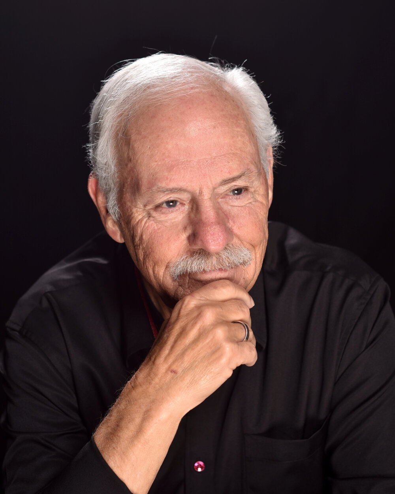

About the Author
Kirk Johnson
I grew up in Cedar Rapids, Iowa, and now live in the Phoenix area. I've been riding motorcycles my whole adult life — my first bike was a 650 Triumph Bonneville.
In 2007 I owned the world's first turbo Sportster. For several years I rode and reviewed bikes full-time, test-riding nearly every Harley model, and built websites for custom bike shops.
My novels are fiction, but many characters carry the names and spirit of real friends I rode with, and some of the wilder moments are inspired by things that actually happened.
These days I'm in my 80s and still having fun writing stories from the rough edges of American life — riverboat gamblers, outlaws, thieves, and motorcycle clubs.
Hope you enjoy the ride.
All of my books are available on Amazon — and you can sample any of them for free on the Specials page.
